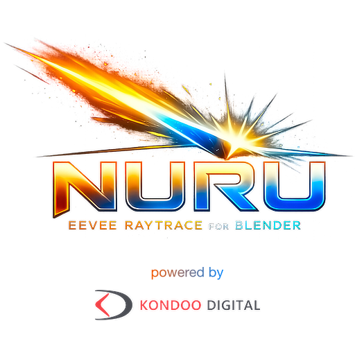

Metal Hardware Ray Tracing for Blender Eevee.
A Blender branch by Kondoo Digital GmbH for per-feature Hardware RT in Eevee.
What Nuru Is | What It Does | How To Use | Diamond 1 Scope | Developer Quick Start
What Nuru Is
Nuru is an experimental Blender/Eevee Hardware RT branch. It adds a user-facing Nuru Raytracing method to Eevee and lets artists decide which parts of a scene are owned by hardware ray tracing and which parts remain on classic Eevee.
The current DIAMOND 1 implementation is Metal-first. It targets Apple GPUs with hardware ray tracing support and keeps Blender's normal multi-platform source tree intact. OptiX and CUDA Nuru backend support are Work in Progress.
| Area | Diamond 1 Status |
|---|---|
| Viewport backend | Metal only |
| Practical device target | Apple M3+ on macOS 14+ |
| Backend roadmap | Metal is active; OptiX and CUDA Nuru support are Work in Progress |
| Fallback behavior | Classic Eevee remains responsible when Nuru or an individual HWRT feature is off |
What Nuru Does
- Global Illumination uses regular Hardware RT diffuse transport.
- Raytrace Shadows uses explicit Hardware RT shadow visibility passes.
- Raytrace Environment handles environment visibility and world-shadow transport.
- Raytrace Reflections can move reflections from classic Eevee to Full RT.
- Raytrace Refractions can be Off or Full RT.
- Indirect GI enables Primary and Secondary GI.
- Scene-final reflection/refraction passes can use sparse material replay, with proxy fallback when replay is unavailable.
- Rough GGX reflection/refraction material evaluation can request roughness-aware texture filtering for supported texture inputs.
Nuru is not a path tracer and does not claim Cycles parity. It is an Eevee renderer path with hardware ray tracing where the current implementation has explicit ownership.
That hybrid renderer design has practical advantages:
- Interactive feedback stays central. Nuru keeps Eevee's real-time renderer model and adds Hardware RT where it is useful instead of replacing the whole frame with path tracing.
- Feature ownership is predictable. GI, shadows, environment, reflections, and refractions can be enabled independently, so classic Eevee remains available where it is still the better or safer path.
- Artists can trade quality and cost per feature. A scene can use Hardware RT reflections without forcing every lighting effect into the same expensive sampling model.
- Eevee compatibility remains valuable. Existing Eevee materials, probes, viewport workflows, and production expectations continue to matter in the hybrid renderer.
- Hardware RT is focused on visible wins. Nuru uses ray tracing for scene intersections, visibility, scene-final specular paths, material replay, and Primary and Secondary GI while keeping the renderer responsive.
How To Use Nuru In Blender
- Open Render Properties.
- Set Render Engine to Eevee.
- Open the Raytracing panel and enable ray tracing.
- Set Method to Nuru Raytracing.
- If the hardware gate is supported, the Nuru status panel shows the logo and enables Quick Settings.
- Enable only the features you want Hardware RT to own.
- Tune GI Resolution, Indirect GI, Indirect GI Resolution, reflection Bounces, refraction Bounces, and Indirect Clamp.
When Nuru Raytracing is selected, Blender's classic Fast GI Approximation panel is intentionally inactive for the hardware method. Nuru uses its own Hardware RT GI controls instead.
Material Preview does not partially activate Nuru. Use Rendered viewport or final render paths when validating Nuru behavior.
macOS Release Download Note
The current v0.9 macOS release build is for now unsigned and not notarized with Apple Developer ID. After downloading the ZIP from GitHub, macOS Gatekeeper may show a message that Blender.app is "damaged" and cannot be opened.
To use the downloaded release, remove the quarantine attribute before opening it:
xattr -dr com.apple.quarantine /path/to/Blender.appCurrent Diamond 1 Scope
Implemented
- Metal Hardware RT scene tracing and acceleration structure support.
- High performance Apple M3+ GI / RT optimisation and Metal offload.
- Hardware RT diffuse GI as the active Nuru GI path.
- Hardware RT shadow and environment visibility.
- Full RT reflection and refraction ownership.
- Scene-final specular resolve, sparse material replay, and proxy fallback.
- Primary and Secondary GI.
- Rough material texture filtering for implemented rough reflection/refraction material evaluation.
Work In Progress / Current Limits
- OptiX and CUDA Nuru backend support are Work in Progress.
- Extended Shading and EEVEE/Cycles shader parity are Work in Progress.
- EEVEE shaders are usually working; however, as Nuru is raytracing, some shaders and textures may need adjustments.
- Apple M1/M2 and non-RTX-class cards cannot be supported due to lack of RT cores.
- Pathtracer-equivalent sharp mirror correctness for Primary and Secondary GI.
Developer Quick Start
This repository follows Blender's normal build flow, with repo-local build roots under builds/.
make update
cmake --build builds/macos-dev --target blender -j 12
cmake --install builds/macos-devFor focused Nuru/Eevee or Metal HWRT changes:
cmake --build builds/macos-dev --target bf_gpu bf_draw blender -j 12If RNA, DNA, or blend-file versioning changed:
cmake --build builds/macos-dev --target makesdna makesrna bf_dna bf_rna bf_blenloader bf_gpu bf_draw blender -j 12Documentation
- docs/eevee_hwrt_first_release.md - first-release runtime contract.
- docs/eevee_hwrt_ship_criteria.md - validation and release criteria.
- docs/eevee_hwrt_system_interactions.md - ownership rules between Nuru and classic Eevee.
- docs/eevee_hwrt_artifact_triage.md - evidence-first debugging guide.
Upstream Blender Links
- Blender Website
- Blender Reference Manual
- Blender Developer Documentation
- Blender Code Review & Bug Tracker
License
Nuru documentation and Kondoo Digital additions are attributed to Kondoo Digital GmbH under the Blender GPL license.
Blender as a whole is licensed under the GNU General Public License. See blender.org/about/license for details.